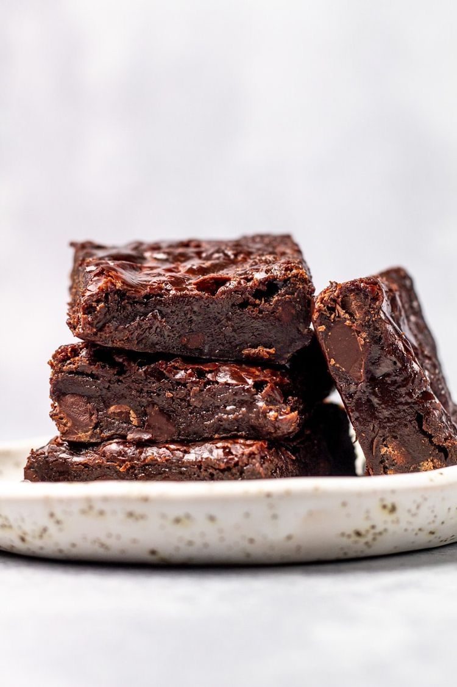

Brownies

Zutaten
- 200 g dunkle Schokolade
- 150 g Butter
- 150 g Zucker
- 3 Eier
- 100 g Mehl
- 1 Prise Salz
Zubereitung
- Schokolade und Butter schmelzen.
- Zucker und Eier einrühren.
- Mehl und Salz dazugeben.
- Bei 180°C für 20–25 Minuten backen.